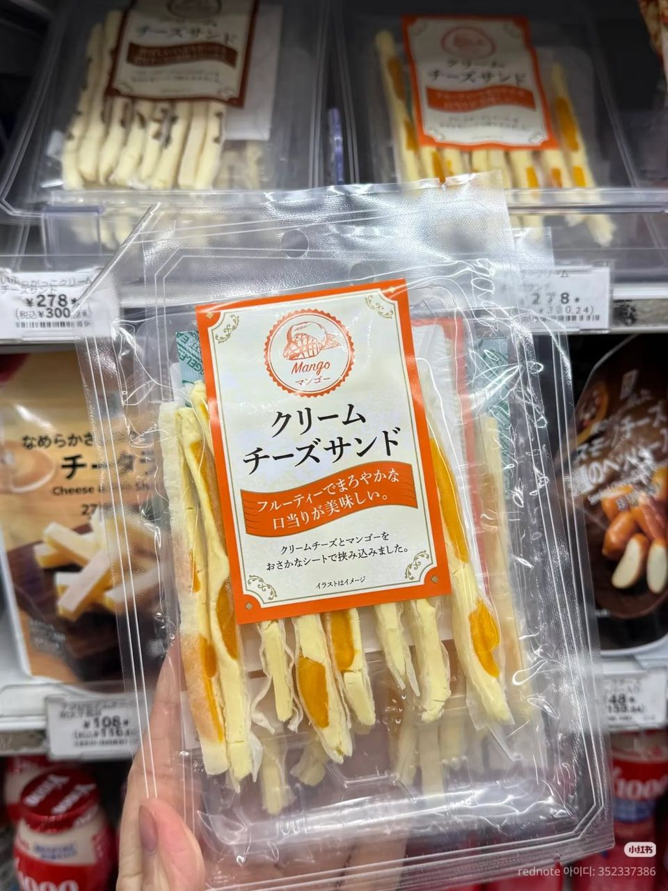
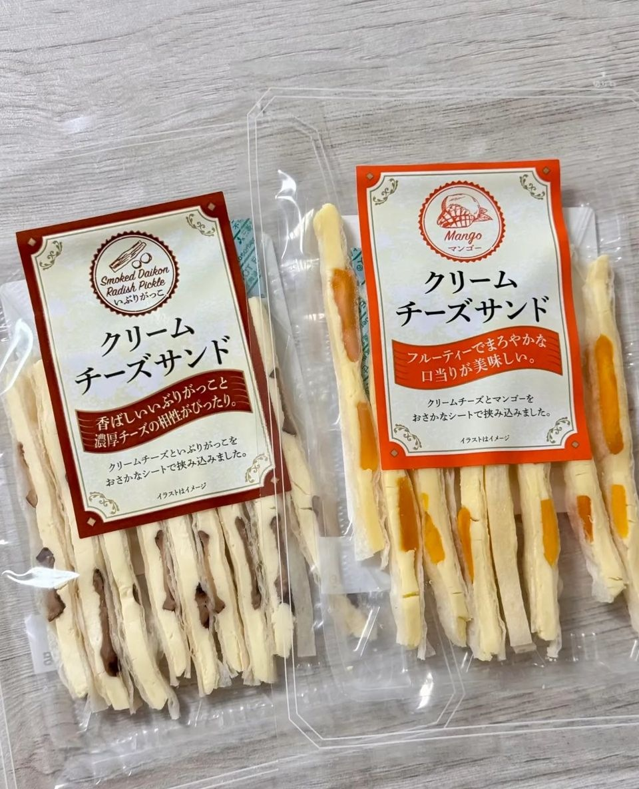
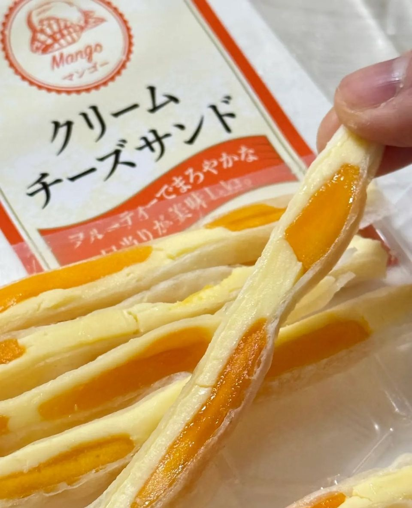
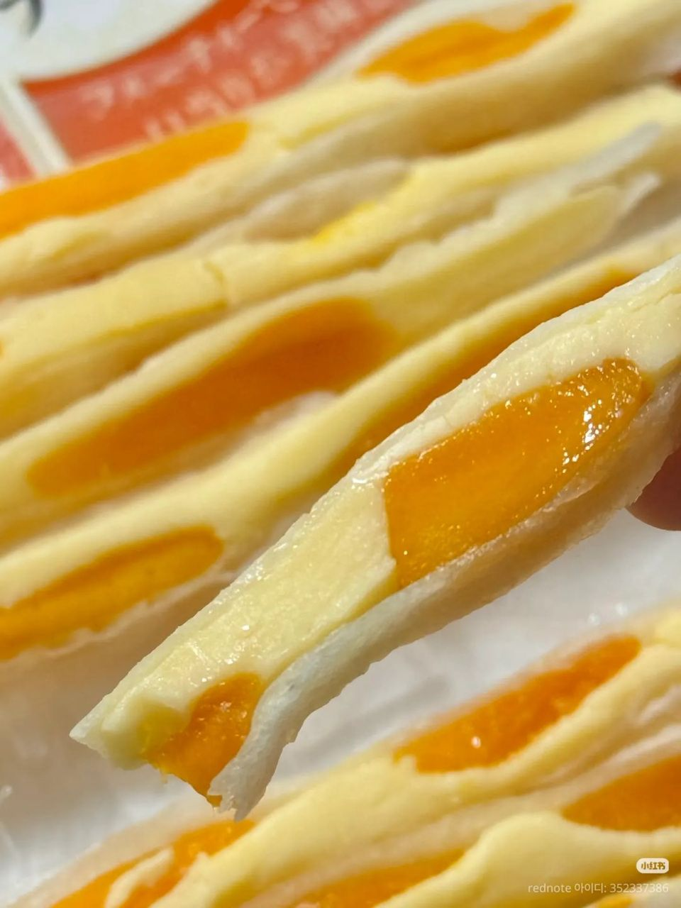

일본 세븐일레븐 크림치즈 샌드, 망고·훈제 단무지 맛 맥주 안주 후기
얇은 생선살 시트 안에 망고+크림치즈, 훈제 단무지+크림치즈. 조합은 이상한데 은근 맛있어요.
일본 첫날 맥주 마시다가 생각나서 올려요 🍺
아직 모르는 사람이 많을 것 같은
신기한 일본 과자 하나 추천할게요!

1. 세븐일레븐에서 발견!
- 파는 곳: 일본 세븐일레븐

2. 맛은 두 가지!
- 🥭 망고 크림치즈 샌드 (マンゴー クリームチーズサンド): 망고 + 크림치즈
- 🧀 이부리가코 크림치즈 샌드 (いぶりがっこ クリームチーズサンド): 훈제 단무지 + 크림치즈


3. 얇은 생선살 시트 안에 크림치즈!
얇은 생선살 시트 안에 크림치즈가 들어 있어요.
조합만 보면 이상한데 은근 맛있습니다!
- 추천: 맥주 안주 찾는 분 (맥주 안주로 합격!)